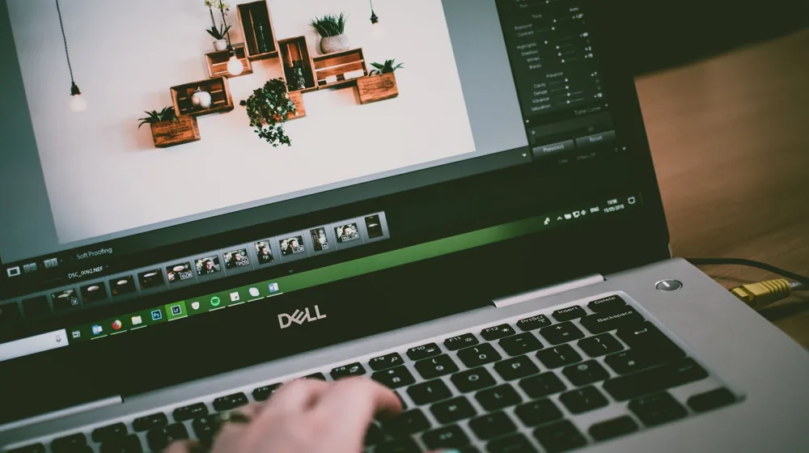

포토샵 유료 구독 없이도 전문가처럼? 무료 이미지 편집 프로그램 5가지 비교
사진: André Eusébio / Pexels (무료 이미지, 출처 표기)
유료 프로그램 대안을 찾는 당신에게

사진이나 이미지를 편집해야 할 때마다 매번 값비싼 유료 소프트웨어 구독이 부담되셨나요? 아니면 복잡한 기능 때문에 시작조차 망설여지셨나요? 전문가 수준의 기능부터 가벼운 보정까지, 유료 프로그램 못지않은 성능을 제공하는 무료 이미지 편집 프로그램들이 다양하게 존재합니다. 이 글에서는 대표적인 무료 편집 도구 5가지를 비교하여 당신의 작업 목적과 숙련도에 딱 맞는 프로그램을 선택할 수 있도록 돕겠습니다.
더 이상 비용 걱정 없이 당신의 아이디어를 시각적으로 구현하고, 사진을 더욱 매력적으로 만들 기회를 놓치지 마세요. 아래에서 각 프로그램의 특징과 장단점을 꼼꼼히 살펴보고 당신에게 최고의 선택이 될 도구를 찾아보세요.
주요 무료 이미지 편집 프로그램 한눈에 보기
다음은 현재 많은 사용자에게 사랑받는 무료 이미지 편집 프로그램 5가지와 그 주요 특징을 정리한 표입니다. 각 프로그램은 고유의 강점을 가지고 있으니, 어떤 작업에 주로 사용할지 염두에 두고 살펴보세요.
위에 제시된 정보는 2024년 8월 기준으로 작성되었습니다. 각 프로그램의 최신 기능 및 정책은 공식 웹사이트에서 다시 확인하시길 권장합니다.
나에게 맞는 무료 편집 프로그램 선택 가이드
다양한 무료 프로그램 중 어떤 것을 선택해야 할지 고민될 수 있습니다. 다음 질문에 답하며 당신에게 가장 적합한 도구를 찾아보세요.
- 전문적인 보정이나 합성이 필요하다면?
GIMP나 Photopea가 좋은 선택입니다. GIMP는 데스크톱에서 강력한 기능을 제공하며, Photopea는 웹 환경에서 포토샵과 유사한 경험을 제공합니다. - 그림 그리기가 주 목적이라면?
Krita는 디지털 드로잉과 페인팅에 특화된 브러시와 기능을 제공합니다. 기본적인 이미지 편집도 가능하지만, 창작에 더 강점을 보입니다. - 간단한 보정이나 웹 기반 편집을 선호한다면?
Pixlr는 직관적인 인터페이스로 빠르고 쉽게 사진을 보정할 수 있으며, Canva는 디자인 템플릿을 활용해 사진을 디자인 요소로 활용하기 좋습니다. - 포토샵에 익숙하거나 PSD 파일을 다뤄야 한다면?
Photopea가 가장 유리합니다. 포토샵과 거의 동일한 단축키와 UI를 제공하여 적응이 쉽고, PSD(포토샵 문서) 파일을 완벽하게 지원합니다.
무료 프로그램 사용 시 알아두면 좋은 팁
무료 이미지 편집 프로그램을 더 효율적으로 활용할 수 있는 몇 가지 팁을 소개합니다.
- 튜토리얼 활용하기: 대부분의 프로그램은 공식 웹사이트나 유튜브에 상세한 튜토리얼을 제공합니다. 초기에 튜토리얼을 따라 해보며 기능을 익히는 것이 좋습니다.
- 단축키 익히기: 자주 사용하는 기능의 단축키를 익히면 작업 속도를 비약적으로 높일 수 있습니다. Photopea나 GIMP는 포토샵과 유사한 단축키를 제공하는 경우가 많습니다.
- 플러그인/확장 기능 활용: GIMP처럼 오픈소스 기반 프로그램은 사용자들이 개발한 다양한 플러그인을 설치하여 기능을 확장할 수 있습니다. 필요한 기능이 있다면 검색을 통해 찾아보세요.
- 클라우드 스토리지 연동: 웹 기반 프로그램(Photopea, Pixlr, Canva)은 클라우드 스토리지와 연동하여 작업 파일을 저장하고 불러올 수 있습니다. 작업물을 안전하게 보관하고 다른 기기에서도 이어서 작업할 수 있습니다.
무료 프로그램 사용, 이것만은 주의하세요
무료 프로그램은 유용하지만 몇 가지 주의할 점이 있습니다.
- 기능 제한 및 광고: 일부 웹 기반 무료 프로그램(예: Pixlr)은 유료 구독 버전과의 차이를 두기 위해 특정 기능을 제한하거나 광고를 노출할 수 있습니다. 작업 흐름을 방해할 수 있으니 미리 확인하는 것이 좋습니다.
- 성능 및 안정성: 웹 기반 프로그램은 인터넷 연결 속도와 브라우저 환경에 따라 성능이 달라질 수 있습니다. 대용량 파일을 다루거나 복잡한 작업을 할 때는 데스크톱 기반 프로그램(GIMP, Krita)이 더 안정적일 수 있습니다.
- 보안 및 개인 정보: 정식 배포처가 아닌 곳에서 설치형 프로그램을 다운로드하는 것은 보안에 취약할 수 있습니다. 반드시 각 프로그램의 공식 웹사이트에서 다운로드하세요. 웹 기반 프로그램의 경우, 중요한 개인 정보가 담긴 이미지는 업로드에 신중해야 합니다.
- 업데이트 및 지원: 오픈소스 프로그램은 커뮤니티 지원을 통해 발전하지만, 유료 상용 프로그램만큼 빠르고 체계적인 고객 지원을 기대하기는 어려울 수 있습니다.
이 가이드를 통해 당신의 작업 환경과 필요에 맞는 무료 이미지 편집 프로그램을 찾아내어 창의적인 결과물을 만드는 데 도움이 되기를 바랍니다.
🔗 이 글도 함께 보면 좋아요: 전성배, 대체 왜 난리일까? 잠자던 천재가 깨어나다!